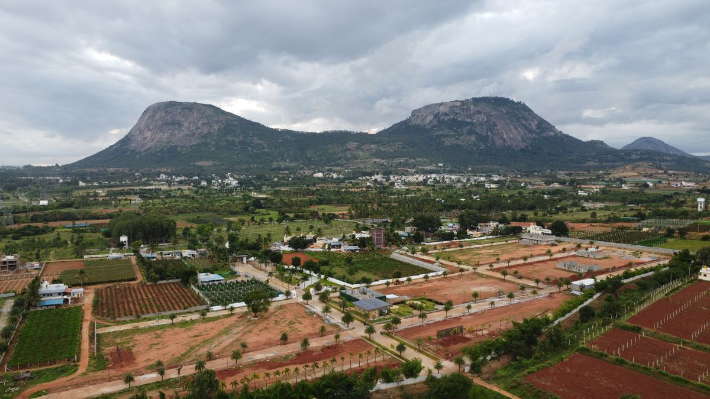
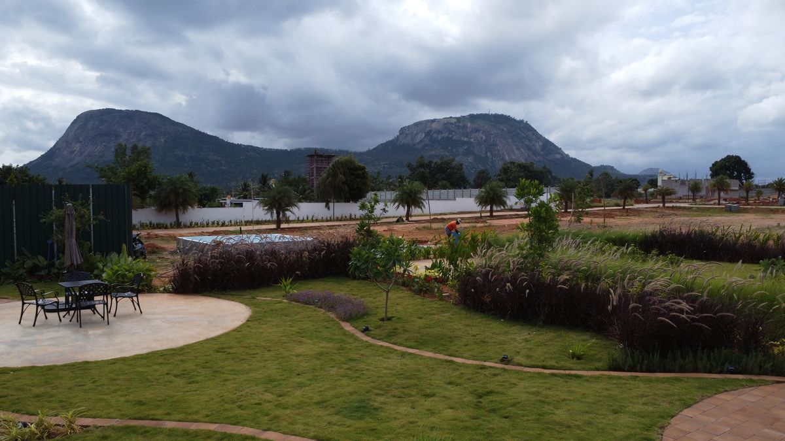

The Palmeraie
An oasis of229 date palms.
Montira takes its cue from the palm oases of Marrakesh. Date palms, olive groves and shaded promenades frame the estate, and cobblestone paths lead past terracotta courtyards to the clubhouse.


- Date palms
229 of them, the signature of the estate.
- Olive groves
Silver-green shade, borrowed from the gardens of Morocco.
- Shaded promenades
Made for the slow evening walk.
- Cobblestone paths
Leading past the courtyards to the clubhouse.
- Terracotta courtyards
Warm earth underfoot, Marrakesh in colour.
229Date palms
One mark for every palm in the Palmeraie.